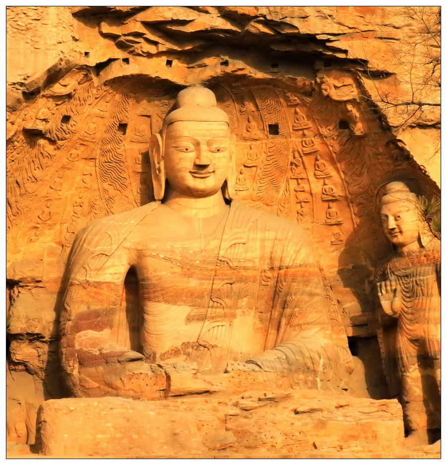
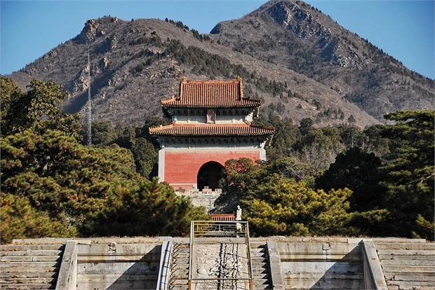
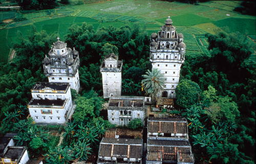
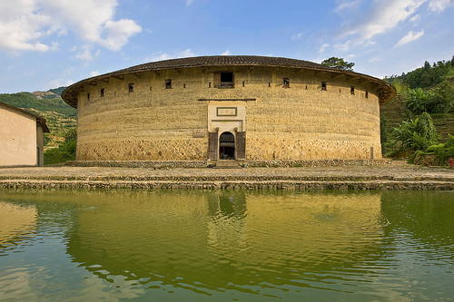
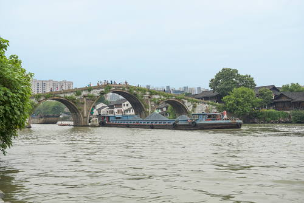
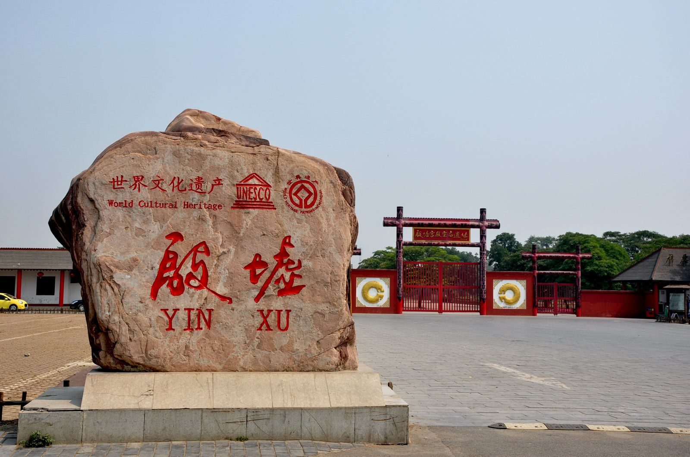

首页
自然遗产名录
文化遗产名录
站长信息
注册

云冈石窟位于中国北部山西省大同市西郊17公里处的武周山南麓，石窟依山开凿，东西绵延1公里。存有主要洞窟45个，大小窟龛252个，石雕造像51000余躯，为中国规模最大的古代石窟群之一，与敦煌莫高窟、洛阳龙门石窟和天水麦积山石窟并称为中国四大石窟艺术宝库。1961年被国务院公布为全国首批重点...

明清皇家陵寝，指建于中国明清时期，现分布于北京市、河北省、湖北省、江苏省、安徽省、辽宁省的皇家陵寝建筑群，国务院现已列为全国重点文物保护单位，联合国教科文组织列为世界文化遗产名录。已列入世遗名录的...

开平碉楼是中国乡土建筑的一个特殊类型，是一种集防卫、居住和中西建筑艺术于一体的多层塔楼式建筑。开平碉楼与村落表现为中国乡村本土文化与外来文化在建筑、规划、土地利用和景观设计等方面的一种完美的结合和独特范例。东西方建筑艺术在这一乡土建筑群落中巧妙地融汇，与优美的自然环境、传统的稻作文化社区...

世界上独一无二的集居住和防御功能于一体的山区民居建筑的福建土楼，体现了聚族而居之一根深蒂固的中原儒家传统观念，更体现了聚集力量、共御外敌的现实需要。同时，土楼与山水交融、与天地参合，是人类民居的杰出典范。

大运河是世界上最长的、最古老的人工水道，也是工业革命前规模最大、范围最广的土木工程项目，它促进了中国南北物资的交流和领土的统一管辖，反映出中国人民高超的智慧、决心和勇气，以及东方文明在水利技术和管理能力方面的杰出成就。历经两千余年的持续发展与演变，大运河直到今天仍发挥着重要的交通、运输、行洪...

2006年7月13日，在立陶宛召开的世界遗产委员会第30届会议上，殷墟以符合世界遗产的第(ii)、(iii)、(iv)、(vi)条遴选标准被列入《世界遗产名录》，成为世界文化遗产。
平遥古城是中国境内保存最为完整的一座古代县城，是中国汉民族城市在明清时期的杰出范例，在中国历史的发展中，为人们展示了一幅非同寻常的文化、社会、经济及宗教发展的完整画卷。